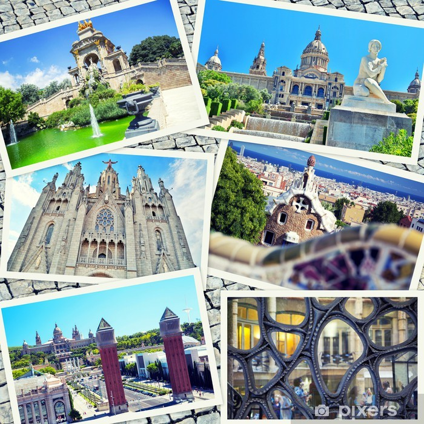

Barcelona was the 20th-most-visited city in the world by international visitors and the fifth most visited city in Europe after London, Paris, Istanbul and Rome, with 5.5 million international visitors in 2011. By 2015, both Prague and Milan had more international visitors. With its Rambles, Barcelona is ranked the most popular city to visit in Spain. Barcelona as internationally renowned a tourist destination, with numerous recreational areas, one of the best beaches in the world, mild and warm climate, historical monuments, including eight UNESCO World Heritage Sites, 519 hotels as of March 2016 including 35 five star hotels, and developed tourist infrastructure. Due to its large influx of tourists each year, Barcelona, like many other tourism capitals, has to deal with pickpockets, with wallets and passports being commonly stolen items. For this reason, most travel guides recommend that visitors take precautions to ensure their possessions' safety, especially inside the metro premises. Despite its moderate pickpocket rate, Barcelona is considered one of the safest cities in terms of health security and personal #afety, mainly because of a sophisticated policing strategy that has dropped crime by 32% in just over three years and has led it to be considered the 15th safest city in the world by Business Insider.
The Barri Gòtic (Catalan for "Gothic Quarter") is the centre of the old city of Barcelona. Many of the buildings date from medieval times, some from as far back as the Roman settlement of Barcelona. Catalan modernista architecture (related to the movement known as Art Nouveau in the rest of Europe) developed between 1885 and 1950 and left an important legacy in Barcelona. Several of these buildings are World Heritage Sites. Especially remarkable is the work of architect Antoni Gaudí, which can be seen throughout the city. His best-known work is the immense but still unfinished church of the Sagrada Família, which has been under construction since 1882 and is still financed by private donations. As of 2015, completion is planned for 2026.
Sopa de Cabra - Si et quedes amb mi - 30 anys